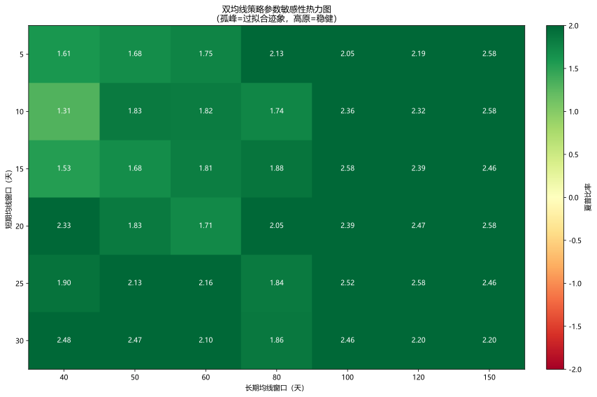

主题切换
1.4 现实挑战
概念详解
量化交易的真实图景
量化交易听起来是一个"用电脑赚钱"的优雅事业，但现实远非如此。每一位量化从业者都必须面对至少四大挑战：过拟合、策略衰退、交易成本和黑箱风险。这些挑战不是可以"规避"的，而是必须在日常工作中持续管理。
四大核心挑战
- 过拟合：样本内好，样本外差。
名词解释：过拟合
模型过度学习训练数据中的噪声和细节，导致在未知数据上表现不佳。量化中常见于参数过多或反复试错。
- 策略衰退：Alpha衰减。
- 交易成本：侵蚀利润。
- 黑箱风险：模型不可解释。
名词解释：数据窥探偏差 (Data Snooping Bias)
在大量尝试中偶然发现表面上显著的规律，但实质上这些规律在样本外不复存在。是人脑和机器共同面对的模式识别陷阱。
名词解释：幸存者偏差 (Survivorship Bias)
分析和建模时只使用了"存活"下来的资产数据（如当前仍在交易的股票），忽略了已退市、破产或被收购的资产，导致回测结果显著高估。
挑战一：过拟合 —— 量化最致命的陷阱
过拟合的本质
给定一组收益率数据，总能用足够复杂的模型"完美拟合"历史。但金融数据的信噪比极低（通常<0.05），这意味着95%以上的价格波动是噪声。在噪声中寻找规律，就像在云朵中寻找形状——总能找到一些，但它们没有预测价值。
过拟合的数学洞察
考虑一个有
R^2_{in-sample} - R^2_{out-of-sample} \propto \frac{p}{T}
这个简洁的关系说明了：参数越多，样本越少，过拟合越严重。
过拟合的常见表现
- 参数曲线呈现"孤峰"：某个参数取值附近夏普极高，稍一偏离就急剧下降，说明策略不够稳健
- 收益集中在极少数交易：去掉收益最高的5笔交易后，整体夏普变为负
- 对不同区间敏感：换成相邻的训练/测试区间划分后，策略表现剧烈波动
- 参数过多：一个有20个参数的策略几乎可以"解释"任何历史数据
过拟合的防线
| 防御手段 | 说明 | 难度 |
|---|---|---|
| 样本外测试 | 严格的时序划分，测试集完全不参与任何决策 | 必须 |
| 交叉验证 | Purged K-Fold，防止信息泄露 | 推荐 |
| 参数敏感性分析 | 核心参数在±30%范围内表现应稳定 | 推荐 |
| 简化模型 | 优先使用参数少的模型（奥卡姆剃刀） | 推荐 |
| 合成数据 | 用一致的统计属性生成数据，检验策略是否捕获了真实规律 | 进阶 |
| Deflated Sharpe Ratio | Lopez de Prado提出的考虑多重检验的夏普统计量 | 进阶 |
挑战二：策略衰退 —— Alpha 的保质期
衰减退化的三种模式
- 竞争性衰退：其他市场参与者也发现了同样的alpha并开始交易，套利空间快速缩小
- 结构性衰退：市场制度、流动性结构或投资者结构发生变化，使得原有的alpha逻辑失效
- 周期性衰退：alpha随商业周期、波动率周期或情绪周期而自然地时好时坏
Alpha 生命周期曲线
典型的alpha衰减曲线可以分为四个阶段：
- 发现期（0-6月）：alpha稳定但未被大规模交易
- 增长期（6-18月）：alpha逐渐被认知，规模上升，收益温和下降
- 饱和期（18-36月）：alpha拥挤，收益大幅下降，波动加大
- 衰退期（36月+）：alpha基本消失甚至反转
\alpha(t) = \alpha_0 \cdot e^{-\lambda t} + \epsilon_t
其中
应对策略衰退的五种武器
- 多因子组合：不依赖单一因子，通过多因子分散化平滑衰减
- 因子择时：根据市场环境动态调整因子权重
- 持续研发：保持3-6个月的因子储备，新老交替
- 因子监测：建立因子表现的实时仪表盘，触发预警时减少配置
- 容量管理：在alpha被充分挖掘前主动控制管理规模
挑战三：交易成本 —— 看不见的利润杀手
交易成本的五个维度
- 佣金 (Commission)：每笔交易固定或按金额比例收取的费用，最直接可见但往往占比最小
- 印花税 (Stamp Duty)：A股卖出时征收0.1%（2023年9月起减半至0.05%），是对高频换手策略的重大负担
- 买卖价差 (Bid-Ask Spread)：流动性越差的股票，价差越大，成本越高
- 市场冲击 (Market Impact)：自己的交易行为推动价格朝不利方向移动，大单或流动性差的股票上尤其显著
- 机会成本 (Opportunity Cost)：没能以期望价格成交导致的收益损失
市场冲击的量化
根据Almgren-Chriss模型，市场冲击可分为：
- 瞬时冲击 (Temporary Impact)：下单瞬间的价格偏离，流动性提供者吸收
- 永久冲击 (Permanent Impact)：市场将你的交易解读为信息信号而调整的价格
\text{总成本} \approx \sum_{t} \left( \frac{1}{2} \sigma \sqrt{\frac{v_t}{V_t}} Q_t + \eta \cdot \frac{Q_t}{V_t} \right)
其中
成本对策略的实际影响
一个回测年化收益15%、换手率500%（每年换5遍仓）的策略，如果每笔交易滑点0.15%，实际收益为：
- 总成本 = 500% × 0.15% = 0.75%（仅滑点，不含印花税和佣金）
- 加上0.05%卖出印花税（单向）：500% × 50%（卖出部分）× 0.05% ≈ 0.13%
- 净收益 = 15% - 0.75% - 0.13% - 佣金 ≈ 13-14%
一个看似稳健的15%年化收益，扣除成本后可能仅剩不到10%。
案例：成本影响回测
此处有展示代码展开 ▼
python
# Pyodide 沙箱已自动注入 demo 数据集(nav_no_cost / trades / capital 等),
# 直接点击 ▶ 一键运行即可看到成本侵蚀效果。
cost_rate = 0.001
nav_with_cost = nav_no_cost.copy()
for i in range(1, len(nav_with_cost)):
if trades[i] != 0:
nav_with_cost[i:] *= (1 - cost_rate)
# 比较有无成本的最终净值
final_no_cost = nav_no_cost[-1]
final_with_cost = nav_with_cost[-1]
total_drag_pct = (final_with_cost - final_no_cost) / final_no_cost * 100
print(f'无成本终值: ${final_no_cost:,.0f}')
print(f'有成本终值: ${final_with_cost:,.0f}')
print(f'总成本侵蚀: {total_drag_pct:.2f}%')点击展开可浏览运行结果
📘 本段为代码片段（依赖上文变量或外部输入，如 df/data/参数等），无法独立运行
挑战四：黑箱风险 —— 当模型无法解释
黑箱风险的三个层面
- 解释缺失：深度学习模型给出了买入信号，但无法解释"为什么"
- 边界失效：不知道模型在什么市场条件下会失效（因为没有清晰的决策边界）
- 信任危机：当模型连续亏损时，无法判断是"正常的策略回撤"还是"根本性的模型失效"
可解释性的价值
| 维度 | 可解释模型 | 黑箱模型 |
|---|---|---|
| 失效诊断 | 可以 | 困难 |
| 组合风控 | 清晰 | 模糊 |
| 监管合规 | 简单 | 复杂 |
| 投资者信任 | 高 | 低 |
| 预测精度 | 中-高 | 最高 |
平衡可解释性与预测力
- SHAP值分析：对任何模型，计算每个特征对每个预测的边际贡献
- 简单模型兜底：核心风险敞口由透明模型管理，复杂模型仅负责增量alpha
- 压力测试：无论黑箱白箱，都必须在历史极端行情和合成极端情景下测试
- 分阶段上线：先小仓位运行——观察归因——再逐步放大
Python实战
案例1：检测过拟合 —— 参数敏感性热力图
此处有展示代码展开 ▼
python
import numpy as np
import pandas as pd
import matplotlib.pyplot as plt
# 注:本案例纯 matplotlib, 不依赖 seaborn(浏览器沙箱不支持)。
def parameter_sensitivity_heatmap(price_data, short_range, long_range):
"""
双均线策略的参数敏感性分析
通过热力图展示不同参数组合下的夏普比率
"""
returns = price_data.pct_change().dropna()
sharpe_matrix = np.zeros((len(short_range), len(long_range)))
for i, short in enumerate(short_range):
for j, long in enumerate(long_range):
if short >= long:
sharpe_matrix[i, j] = np.nan
continue
# 计算信号
ma_short = price_data.rolling(short).mean()
ma_long = price_data.rolling(long).mean()
position = (ma_short > ma_long).astype(int).shift(1)
# 计算策略收益和夏普
strategy_returns = position * returns
strategy_returns = strategy_returns.dropna()
if len(strategy_returns) > 0 and strategy_returns.std() > 0:
sharpe = strategy_returns.mean() / strategy_returns.std() * np.sqrt(252)
else:
sharpe = np.nan
sharpe_matrix[i, j] = sharpe
# 绘制热力图(纯 matplotlib, 无需 seaborn)
plt.figure(figsize=(12, 8))
masked = np.where(np.isnan(sharpe_matrix), np.nan, sharpe_matrix)
im = plt.imshow(masked, cmap='RdYlGn', aspect='auto', vmin=-2, vmax=2)
plt.xticks(range(len(long_range)), long_range)
plt.yticks(range(len(short_range)), short_range)
# 在每个 cell 上写数值(skip 不可行情形)
for i in range(sharpe_matrix.shape[0]):
for j in range(sharpe_matrix.shape[1]):
v = sharpe_matrix[i, j]
if not np.isnan(v):
color = 'white' if abs(v) > 1.0 else 'black'
plt.text(j, i, f'{v:.2f}', ha='center', va='center',
color=color, fontsize=10)
cbar = plt.colorbar(im, fraction=0.046, pad=0.04)
cbar.set_label('夏普比率')
plt.xlabel('长期均线窗口（天）')
plt.ylabel('短期均线窗口（天）')
plt.title('双均线策略参数敏感性热力图\n（孤峰=过拟合迹象，高原=稳健）')
plt.tight_layout()
plt.show()
return sharpe_matrix
# 一键运行(demo 数据已自动注入 df['Close'])
param_sensitivity = parameter_sensitivity_heatmap(
df['Close'],
short_range=[5, 10, 15, 20, 25, 30],
long_range=[40, 50, 60, 80, 100, 120, 150]
)
best_idx = np.unravel_index(np.nanargmax(param_sensitivity), param_sensitivity.shape)
short_vals = [5, 10, 15, 20, 25, 30]
long_vals = [40, 50, 60, 80, 100, 120, 150]
print('=' * 50)
print(f"✅ 最佳参数: 短期均线={short_vals[best_idx[0]]}, 长期均线={long_vals[best_idx[1]]}")
print(f"✅ 最佳夏普比率: {np.nanmax(param_sensitivity):.3f}")
print(f"⚠️ 对比最低夏普: {np.nanmin(param_sensitivity):.3f} (差距越大越可能过拟合)")点击展开可浏览运行结果
================================================== ✅ 最佳参数: 短期均线=15, 长期均线=100 ✅ 最佳夏普比率: 2.578 ⚠️ 对比最低夏普: 1.310 (差距越大越可能过拟合)

案例2：完整的成本模拟器
此处有展示代码展开 ▼
python
import numpy as np
import pandas as pd
class CostSimulator:
"""
交易成本模拟器：从回测信号到扣除成本后的净值
"""
def __init__(self, commission_rate=0.0003, stamp_tax_rate=0.0005,
slippage_bps=1.0, impact_model='linear'):
"""
commission_rate: 佣金费率（万3）
stamp_tax_rate: 印花税率（万5，仅在卖出时收取）
slippage_bps: 滑点（基点）
impact_model: 冲击模型 ('linear', 'sqrt')
"""
self.commission_rate = commission_rate
self.stamp_tax_rate = stamp_tax_rate
self.slippage_bps = slippage_bps / 10000 # 转换为百分比
self.impact_model = impact_model
def compute_costs(self, positions, prices, volumes=None):
"""
positions: 每日目标仓位（0-1，表示持仓比例）
prices: 每日价格
volumes: 每日市场成交量（可选，用于冲击模型）
返回扣费后的净值序列
"""
n = len(positions)
trades = np.diff(positions, prepend=0) # 每日仓位变化
turnover = np.abs(trades) # 每日换手率
# 计算各类成本
commission_cost = turnover * self.commission_rate # 买卖双向佣金
# 印花税仅在卖出时（trades < 0 表示减仓）
stamp_cost = np.where(trades < 0, -trades * self.stamp_tax_rate, 0)
# 滑点
slippage_cost = turnover * self.slippage_bps
total_cost_rate = commission_cost + stamp_cost + slippage_cost
# 价格收益率
price_returns = np.diff(np.log(prices), prepend=np.log(prices[0]))
price_returns[0] = 0
# 策略总收益 = 持仓收益 - 交易成本
strategy_returns = positions * price_returns - total_cost_rate
# 累计净值
nav = np.cumprod(1 + strategy_returns)
return nav, {
'total_commission': np.sum(commission_cost),
'total_stamp': np.sum(stamp_cost),
'total_slippage': np.sum(slippage_cost),
'total_turnover': np.sum(turnover),
'avg_cost_per_trade': np.mean(total_cost_rate[turnover > 0]) if np.any(turnover > 0) else 0
}
# 一键运行(用 signal 当仓位, df['Close'] 当价格)
# 注: cost simulator 期望 positions in [0, 1] 表示持仓比例,
# 而教学片段里的 signal 是 [-1, 0, 1], 所以映射到 [-1, 1] 再 + 1 / 2 → [0, 1]
positions_q = (signal + 1) / 2.0
prices_q = df['Close'].values
simulator = CostSimulator(commission_rate=0.00025, slippage_bps=2.0)
nav_costed, cost_report = simulator.compute_costs(positions_q, prices_q)
total_cost = (
cost_report['total_commission']
+ cost_report['total_stamp']
+ cost_report['total_slippage']
)
print('=' * 50)
print(f"✅ 总换手率: {cost_report['total_turnover']:.2%}")
print(f"✅ 总交易成本: {total_cost:.4%}")
print(f"✅ 佣金: {cost_report['total_commission']:.4%}")
print(f"✅ 印花税: {cost_report['total_stamp']:.4%}")
print(f"✅ 滑点: {cost_report['total_slippage']:.4%}")
print(f"✅ 扣除成本终值: ${nav_costed[-1]:,.0f} (vs 无成本初始 {len(nav_costed)*10000:,.0f})")点击展开可浏览运行结果
================================================== ✅ 总换手率: 6450.00% ✅ 总交易成本: 4.5025% ✅ 佣金: 1.6125% ✅ 印花税: 1.6000% ✅ 滑点: 1.2900% ✅ 扣除成本终值: $1 (vs 无成本初始 2,520,000)
常见误区
误区一：成本不重要，只要alpha足够强
事实：成本和alpha是同一枚硬币的两面。一个看似年化30%的策略，如果年换手1000%（高频策略常见），成本可能高达15-20%。Alpha的强度决定了你能容忍多高的交易成本，而成本决定了多大体量的alpha是可以被捕获的。
误区二：过拟合可以通过样本外测试完全避免
事实：如果研究者可以用样本外结果来决定是否上线策略（"再看看样本外，如果不好就换个参数试试"），那么所谓的"样本外"实际上就变成了"第二个样本内"。这种伪样本外（Pseudo Out-of-Sample）是最隐蔽的过拟合形式。
误区三：黑箱模型一定比透明模型好
事实：在金融领域，适度复杂性的模型往往表现最好。极其复杂的深度学习模型可能在样本外快速退化，而简单透明的线性模型可能持续稳定。关键不是模型的复杂度，而是模型捕捉的信号是否具有经济逻辑支撑。
实战练习
过拟合诊断：找一个公开的量化策略（如双均线交叉），挑选参数组合，在5年历史数据上进行"优化"，然后在接下来3年的样本外数据上验证。记录样本内和样本外的夏普比率差异，思考差异的来源。
成本冲击模拟：使用CostSimulator类，针对一个每日交易的日频策略（日换手率10%），分别模拟不同佣金率（万1到万5）和不同滑点假设（1bp到5bp）下的净值差异，分析哪个成本维度对策略影响最大。
策略衰退分析：选择一个已知的量化因子（如动量、市值、价值），分析其在中国A股市场的历史表现，观察其表现是否随着时间推移而减弱。结合该因子的"拥挤度"指标（如对应Smart Beta ETF的规模增长），讨论因子衰退的原因。
延伸阅读
- 《Advances in Financial Machine Learning》—— Lopez de Prado，第11-16章关于回测过度拟合的深度剖析
- 《Algorithmic and High-Frequency Trading》—— Cartea, Jaimungal, Penalva，高频交易和微观结构
- Bailey, D. and Lopez de Prado, M. (2014): "The Deflated Sharpe Ratio"
- 《The Crisis of Crowding》—— Ludwig Chincarini，拥挤交易的系统性风险
- Fama, E. and French, K. (2010): "Luck Versus Skill in the Cross-Section of Mutual Fund Returns"
本章要点
- 过拟合是量化最大的敌人，防线包括严格的样本外测试、参数敏感性分析和模型简化
- Alpha有其自然生命周期，所有策略都会衰退，多因子组合和持续研发是应对之道
- 交易成本包括佣金、印花税、价差、市场冲击和机会成本五个维度，高频策略成本可能侵蚀大部分收益
- 黑箱模型需要在预测力和可解释性之间权衡，SHAP分析和分阶段上线是实用之道
- 量化交易的真实挑战不是技术性的，而是方法论和纪律性的